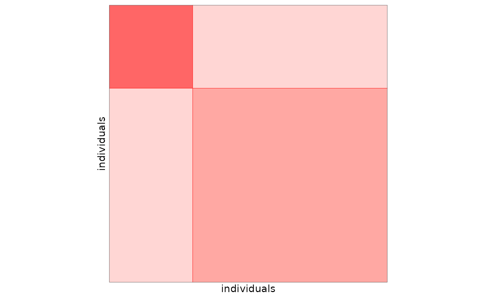
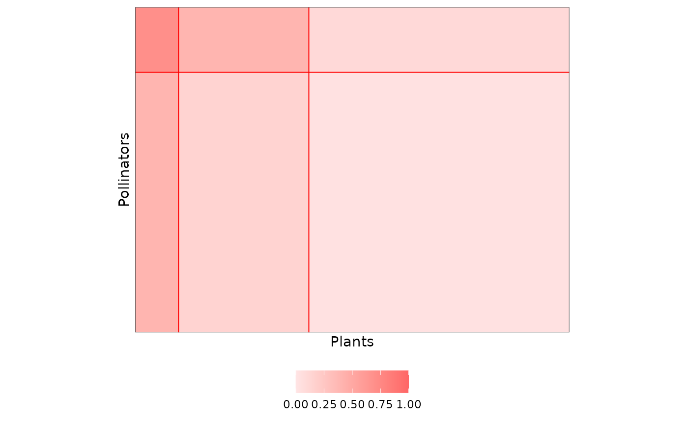
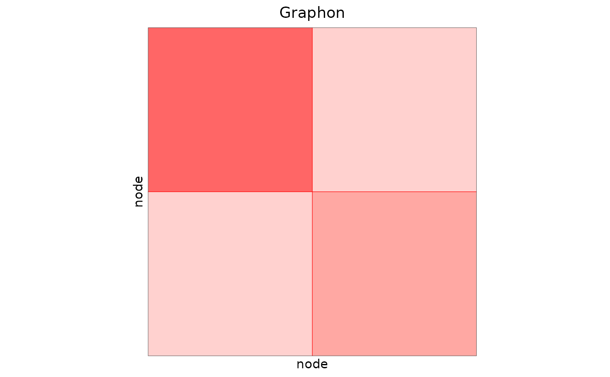
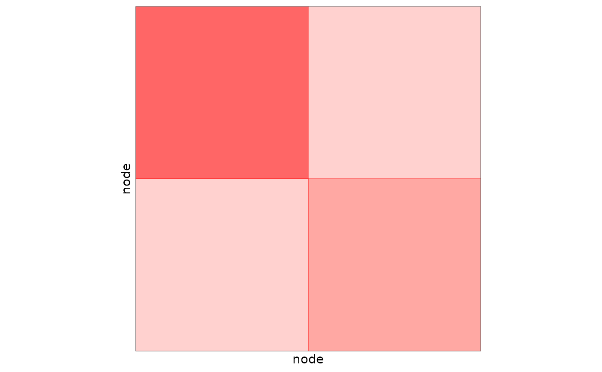

Draws the block connectivity of a simple or bipartite SBM on the unit square, each block being sized by its proportion. The axes are in number of nodes, so that the aspect ratio of the plot reflects the dimensions of the network.
Arguments
- connectParam
: a matrix of connectivity parameters (one row per row block, one column per column block), or a list with a
meanelement as given by$connectParamof an SBM object- blockProp
: the block proportions. A vector for a simple SBM, a list of two vectors (row and col) for a bipartite SBM
- nbNodes
: a vector of length 1 or 2 giving the number of nodes in row and col. Default is 1
- dimLabels
: a vector of length 1 or 2 specifying the types of nodes in row and col (functional group)
- plotOptions
: a list providing options. See details below.
Details
The graphon of an SBM is the piecewise constant function on \([0,1]^2\) whose value on the
rectangle of row block \(k\) and column block \(q\) is the connectivity parameter
\(\alpha_{kq}\); the sides of the rectangle are the proportions \(\pi_k\) and
\(\pi_q\) of the blocks. Contrary to the matrix plots (type = 'data' or
'expected' in plot.SBM), it does not depend on the nodes nor on
their memberships, only on the parameters of the model.
The blocks are drawn with the colors of the block background of the matrix plot
(plotMyMatrix), so that both plots can be put side by side.
For an SBM object (sampled or estimated), plot(x, type = 'graphon') gives the same plot.
The list of parameters plotOptions for the graphon plot is
"legend": Boolean. Set TRUE if you want to see the legend. Default value is FALSE
"legend.title": Boolean. Set TRUE if you want to print the title of the legend. Default value is FALSE
"legend.position": Position of the legend. Possible values are 'bottom', 'top','left,'right'. Default value is 'bottom'
"line.color": Chain of character. The color of the lines to separate blocks. Default value is red
"line.width": Numeric. Width of the lines to separate blocks. Default value is NULL, automatically chosen
"title": Chain of character. Title of the plot. Default value is NULL
"block.color": Chain of character. The color of the blocks. Default value is red
"blockAlpha.min", "blockAlpha.max": Numeric. Opacity of the blocks with the lowest and highest connectivity. Default values are 0.1 and 0.6
"limits": Numeric vector of length 2. Range of the connectivity values mapped to the colors. Default value is NULL: from 0 to the maximal value (or the range for negative values). Set it to compare several graphons on the same color scale, for instance c(0, 1) for Bernoulli models
Examples
## simple SBM
plotMyGraphon(matrix(c(0.8, 0.1, 0.1, 0.4), 2, 2), blockProp = c(0.3, 0.7),
nbNodes = 50, dimLabels = 'individuals')

## bipartite SBM
plotMyGraphon(matrix(c(0.7, 0.4, 0.1, 0.4, 0.15, 0.03), 2, 3, byrow = TRUE),
blockProp = list(row = c(0.2, 0.8), col = c(0.1, 0.3, 0.6)),
nbNodes = c(90, 120), dimLabels = c(row = 'Pollinators', col = 'Plants'),
plotOptions = list(legend = TRUE, limits = c(0, 1)))

## from an SBM object: the parameters of a sampled network
mySampler <- sampleSimpleSBM(nbNodes = 60, blockProp = c(0.5, 0.5),
connectParam = list(mean = matrix(c(0.6, 0.1, 0.1, 0.3), 2, 2)))
plotMyGraphon(mySampler$connectParam, mySampler$blockProp, mySampler$nbNodes,
dimLabels = 'node', plotOptions = list(title = 'Graphon'))

## same plot
plot(mySampler, type = 'graphon')
